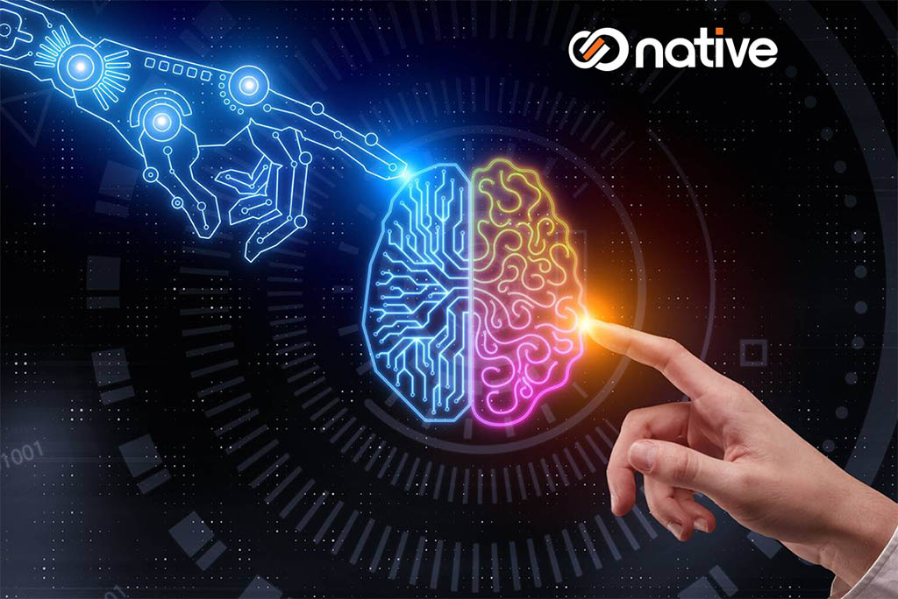

Vamos Entender um Pouco sobre Inteligência Artificial
O que é Inteligência Artificial?

Inteligência Artificial (IA) refere-se à simulação de processos de inteligência humana por meio de sistemas computacionais. Isso inclui a capacidade de aprender, raciocinar e resolver problemas de maneira semelhante aos seres humanos. A IA é um campo abrangente que envolve várias subáreas, como aprendizado de máquina, redes neurais e processamento de linguagem natural.
O aprendizado de máquina, por exemplo, é uma técnica em que algoritmos são usados para analisar dados e melhorar automaticamente suas performances ao longo do tempo, sem intervenção humana direta. Redes neurais artificiais, inspiradas pelo cérebro humano, são usadas para identificar padrões e tomar decisões complexas.
O processamento de linguagem natural (PLN) é uma área da IA que se concentra na interação entre computadores e humanos através da linguagem natural. Isso permite que máquinas compreendam e respondam a comandos e perguntas em linguagem humana, facilitando a comunicação e a automação.
A IA tem aplicações em diversas áreas, incluindo saúde, onde pode auxiliar no diagnóstico de doenças, na finança, na previsão de tendências econômicas e até mesmo na indústria do entretenimento, criando experiências personalizadas para os usuários.
Contudo, a evolução da IA também levanta questões éticas e sociais, como a privacidade dos dados e o impacto no mercado de trabalho. À medida que a tecnologia avança, é essencial considerar essas questões para garantir que a IA seja desenvolvida e utilizada de maneira responsável.
Em resumo, a Inteligência Artificial representa uma das maiores inovações tecnológicas do século XXI, com o potencial de transformar profundamente a forma como vivemos e trabalhamos. À medida que continuamos a explorar suas possibilidades, será crucial equilibrar os benefícios com uma consideração cuidadosa de seus desafios e implicações.
Vídeo de Inteligência Artificial
Para que Serve a Inteligência Artificial?
A inteligência artificial (IA) é utilizada para automatizar tarefas, melhorar a eficiência de processos e ajudar na tomada de decisões em diversos setores, como saúde, finanças, e tecnologia. Ela possibilita o desenvolvimento de sistemas que podem aprender com dados, reconhecer padrões e realizar atividades de forma autônoma.
Principais Aplicações de Inteligência Artificial
A inteligência artificial (IA) é aplicada em diversas áreas, como saúde, onde auxilia no diagnóstico e tratamento de doenças; finanças, onde analisa dados para prever tendências de mercado; e transporte, com o desenvolvimento de veículos autônomos. A IA também é usada em assistentes virtuais, como Siri e Alexa, que ajudam os usuários em tarefas diárias e na automação de casas inteligentes.
Redes Sociais
Em um mundo constantemente conectado, as redes sociais desempenham papel importante na sociabilidade e comunicação humana, e vêm afetando até mesmo a formação de posicionamentos e opiniões.
Personalizadas, elas passam a sensação de liberdade, pois, em geral, o feed mostra conteúdos que escolhemos ter ao seguir perfis que vão ao encontro do que gostamos e acreditamos.
No entanto, o responsável por sugerir e organizar quais os conteúdos são mais relevantes para você, baseado no que foi aprendido sobre suas preferências e os perfis que você segue, é a inteligência artificial, através dos algoritmos.
Tabela Básica sobre Inteligência Artificial
Aspecto
Descrição
Técnicas
Métodos usados para implementar IA, como aprendizado de máquina e redes neurais.
Aplicações
Áreas onde a IA é utilizada, como assistentes virtuais e carros autônomos.
Benefícios
Vantagens do uso da IA, como automação de tarefas e melhoria na tomada de decisões.
Exemplo de Espaçamento em Listas
Definição: Sistemas que realizam tarefas que normalmente requerem inteligência humana.
Técnicas: Aprendizado de Máquina, Redes Neurais, Processamento de Linguagem Natural.
Aplicações: Assistentes Virtuais, Carros Autônomos, Recomendação de Produtos.
Benefícios: Aumento da eficiência, Precisão nas decisões, Personalização.